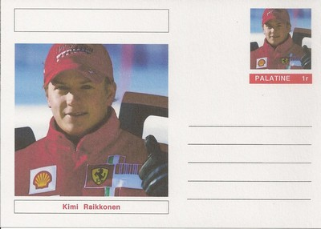
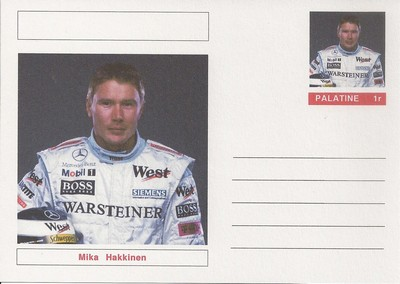
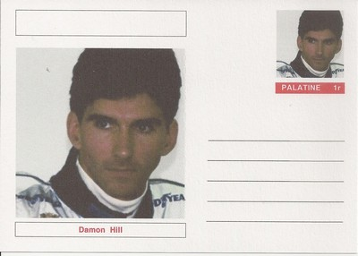
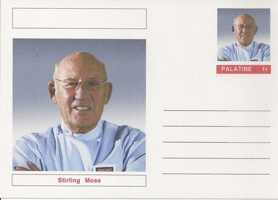
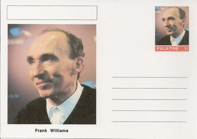

Palatine
 |
 Issue date: Unknown A postal stationery card featuring Kimi Raikkonen. Raikkonen competed in F1 from 2001 to 2009; during this time he drove for Sauber, McLaren and Ferrari. He won the World Championship drivers' title with Ferrari in 2007. In 2007, when he joined Ferrari, Raikkonen became the highest paid driver in motorsport. In 2009, he was listed by Forbes as the second highest paid athlete in the world. Raikkonen was unable to secure a drive for 2010 - despite having a contract with Ferrari, he was replaced by Fernando Alonso. Raikkonen returned to F1 in 2012 with the Lotus team.  Issue date: Unknown A postal stationery card featuring Mika Hakkinen. Hakkinen competed in F1 from 1991 to 2001; for the first two years he drove for Lotus and then exclusively for McLaren for the rest of his F1 career. Hakkinen was critically injured during qualifying at the final round of the 1995 season (Australia) - his life was saved by emergency surgery performed by Sid Watkins. It was a tyre failure that caused the accident; the incident forged a strong bond between Hakkinen and team principal Ron Dennis. Hakkinen recovered and was on the starting grid for the first race of the 1996 season. He went on become a double World Champion in 1998 and 1999.  Issue date: Unknown A postal stationery card featuring Damon Hill. Hill competed in Formula 1 from 1992 to 1999. He drove for Brabham, Williams, Arrows and Jordan. In 1996 he won the World Championship - the only son of a World Champion to do so. Hill also gave Jordan their first win in 1998. In 2006, Hill became president of the British Racing Drivers' Club, succeeding Jackie Stewart - he presided over the securing of a 17-year contract for Silverstone to hold the British Grand Prix, which enabled the circuit to undertake extensive renovation work.  Issue date: Unknown A postal stationery card featuring Sir Stirling Moss OBE. Moss competed in Formula 1 from 1951 to 1961 - he is regarded as one of the greats despite never winning the World Championship. He was runner up four times and third place three times. Moss drove a variety of cars for a number of teams, the cars were: HWM 51, HWM 52, ERA G Type, Connaught Type A, Cooper Special, Maserati 250F, Mercedes W196, Vanwall 57, Cooper T43, Cooper T51, BRM P25, Lotus 18 and Lotus 21. After a serious accident in 1962, Moss retired from F1. He remained the most successful English driver until 1991 when Nigel Mansell surpoassed Moss's number of wins.  Issue date: Unknown A postal stationery card featuring Juan Manuel Fangio. Fangio competed in F1 from 1950 to 1958 - he won the drivers' championship five times, with four different teams (Alfa Romeo, Mercedes-Benz, Ferrari and Maserati) - a feat that has never been repeated. Regarded by many as the greatest driver of all time, Fangio was held in high regard by the drivers. In his final race, Mike Hawthorn had lapped Fangio, but just before Hawthorn crossed the line, he braked to allow Fangio through so that he could complete the full race distance.  Issue date: Unknown A postal stationery card featuring Sir Frank Williams CBE. Williams started out as driver and mechanic, this was funded by his work as a travelling grocery salesman. He founded Frank Williams Racing Cars in 1966, and ran a number of drivers in Formula 2 and Formula 3; Williams purchased a Formula 1 Brabham chassis, which he entered in the 1969 season (driven by Piers Courage). In 1972, Williams built his first F1 car, but it was crashed and destroyed at its first race. In the early 1970's Williams struggled financially, but managed to keep going - in 1976 Williams finally took on a partner, Walter Wolf. The team no longer belonged to Williams, so in 1977 he left, along with engineer Patrick Head. The two acquired an empty carpet warehouse in Didcot and formed Williams Grand Prix Engineering. The team's first win came in 1979 when Clay Regazzoni drove the Cosworth powered Williams FW07 to victory at the British Grand Prix at Silverstone. |